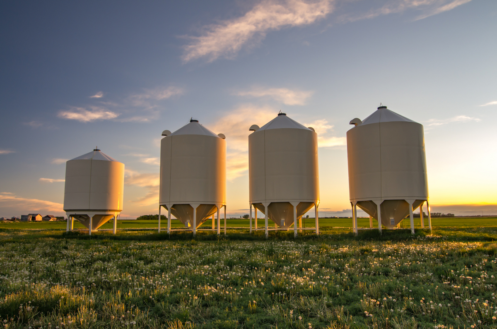
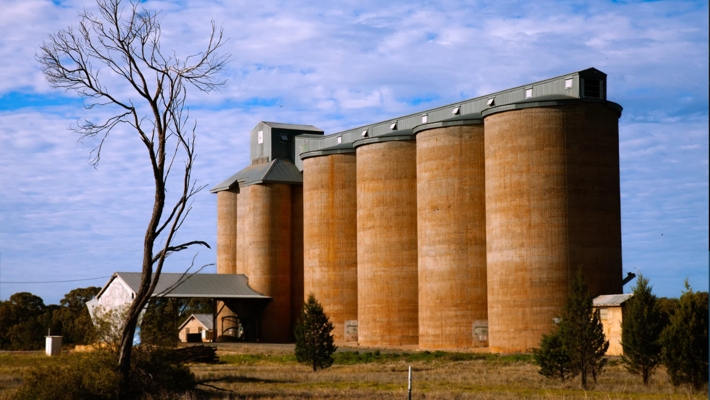
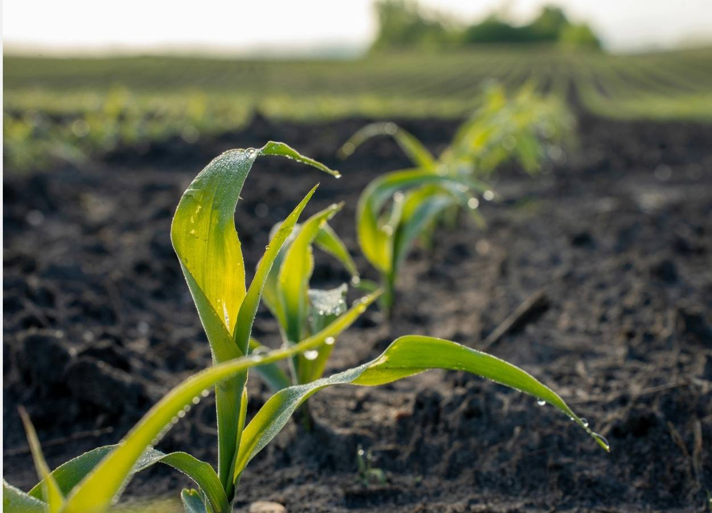

FINANCEIRO
- MENOS CAPITAL PARADO EM ESTOQUE;
- REDUÇÃO DE PERDAS FINANCEIRAS;
- MELHOR NEGOCIAÇÃO COM CLIENTES E FORNECEDORES;
A Grão Certo automatiza o controle do silo, reduzindo inspeções manuais e acelerando a tomada de decisão
Impulsione a gestão do estoque no silo com medições em tempo real, relatórios e alertas


EMPRESA ESPECIALIZADA EM TECNOLOGIA DE SILOS
Para dar certo, escolha Grão Certo
A GRÃO CERTO É UMA EMPRESA ESPECIALIZADA NA OTIMIZAÇÃO DOS PROCESSOS DE ARMAZENAGEM DE MILHO, ATUANDO DIRETAMENTE NA MELHORIA DA EFICIÊNCIA E DA CONSERVAÇÃO DOS GRÃOS EM SEUS SILOS. COMPROMETIDA COM QUALIDADE, INOVAÇÃO E RESPONSABILIDADE OPERACIONAL, A EMPRESA DESENVOLVE SOLUÇÕES QUE REDUZEM PERDAS, PRESERVAM O VALOR DO PRODUTO E AUMENTAM A RENTABILIDADE DO PRODUTOR
SOLUÇÕES INTEGRADAS E INTELIGENTES, FOCADAS NA EFICIÊNCIA OPERACIONAL E NO CONTROLE ESTRATÉGICO DOS SEUS SILOS.
ATUAMOS COM MEDIÇÃO AUTOMATIZADA E PRECISA DO VOLUME ARMAZENADO, GARANTINDO CONTROLE EM TEMPO REAL E REPOSIÇÃO BASEADA NA TAXA DE CONSUMO. TAMBÉM REALIZAMOS A CAPTAÇÃO E ANÁLISE DE DADOS SOBRE PRODUÇÃO, SAZONALIDADE E VENDAS, FORNECENDO INFORMAÇÕES ESTRATÉGICAS QUE AUMENTAM A PREVISIBILIDADE, REDUZEM PERDAS E ELEVAM A RENTABILIDADE DO NEGÓCIO.
BENEFÍCIOS DOS NOSSOS SERVIÇOS



Acesse agora nosso simulador financeiro e descubra, em poucos segundos, o impacto real que a Grão Certo pode trazer para o seu negócio
NOSSO COMPROMISSO COM A QUALIDADE ESTÁ PRESENTE EM CADA ETAPA DO NOSSO SOFTWARE DE MONITORAMENTO E GESTÃO DOS SILOS. TRABALHAMOS COM TECNOLOGIA DE MEDIÇÃO AUTOMATIZADA, CONTROLE PRECISO DE VOLUME E GERAÇÃO DE DADOS ESTRATÉGICOS, GARANTINDO EFICIÊNCIA OPERACIONAL, REDUÇÃO DE PERDAS E MELHORES RESULTADOS NA ARMAZENAGEM DE MILHO.
CONTAMOS COM PROFISSIONAIS QUALIFICADOS E CAPACITADOS PARA ATUAR NA OTIMIZAÇÃO DOS PROCESSOS DE ARMAZENAGEM. A ATUALIZAÇÃO CONSTANTE E O DOMÍNIO DAS MELHORES PRÁTICAS DO SETOR GARANTEM SOLUÇÕES TÉCNICAS CONFIÁVEIS, ALINHADAS ÀS NECESSIDADES REAIS DO PRODUTOR E DA OPERAÇÃO.
A GRÃO CERTO CONSTRÓI SUA REPUTAÇÃO COM BASE NA TRANSPARÊNCIA, PRECISÃO DAS INFORMAÇÕES E COMPROMISSO COM RESULTADOS. VALORIZAMOS RELAÇÕES SÓLIDAS COM NOSSOS CLIENTES, OFERECENDO DADOS CONFIÁVEIS, CONTROLE EM TEMPO REAL E SUPORTE TÉCNICO ESPECIALIZADO. AO ESCOLHER A GRÃO CERTO, VOCÊ OPTA POR SEGURANÇA, PREVISIBILIDADE E SOLUÇÕES QUE REALMENTE IMPACTAM A EFICIÊNCIA DO SEU NEGÓCIO.